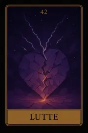

Famille 6 – Hathor (Vénus)
Cette famille explore l’amour, les liens affectifs, l’harmonie et la douceur relationnelle. Elle est liée à Vénus et à Hathor, déesse de l’amour, de la beauté et de la compassion. Elle révèle nos manières d’aimer, de recevoir, de créer des liens et d’incarner la tendresse dans le monde.
Carte 6 – Union
Mots-clés : Équilibre, Union, Bienveillance, Partage, Symbiose
Numérologie : 6 – Harmonie, Amour, Partage, Relation
Planète principale : Vénus
Divinité principale : Hathor
Planète secondaire : Soleil
Divinité secondaire : Râ
Interprétation de la carte 6 : Union (droite)
1. Caractère de la personne
La carte Union indique une personne harmonieuse, équilibrée et bienveillante. Sous l'influence de Vénus et de Hathor, cette personne est naturellement tournée vers l’amour, la paix et le partage. Elle ressent un besoin profond de connexion avec les autres et cherche à établir des relations équilibrées et harmonieuses. Son caractère est marqué par un sens inné de la bienveillance et du don de soi, en créant des liens de symbiose et de compréhension mutuelle. L’influence secondaire du Soleil et de Râ donne une lumière et un épanouissement supplémentaires à cette personne, l’incitant à rayonner de positivité et à partager cette énergie créative avec ceux qui l’entourent.
2. Plan affectif
Sur le plan affectif, Union annonce une relation harmonieuse et pleine de bienveillance. Cela peut représenter une relation amoureuse ou un partenariat dans lequel l’équilibre, la compréhension mutuelle et le partage sont les bases fondamentales. L’influence de Vénus et Hathor favorise la compassion, l’amour inconditionnel et la création d’un espace sécurisant pour les deux parties. L’influence secondaire du Soleil et de Râ éclaire la relation, apportant clarté, optimisme et expansion. Cette carte évoque une phase d’épanouissement mutuel, où la relation devient une source d’harmonie et de croissance personnelle pour les deux individus.
3. Plan matériel
Sur le plan matériel, Union symbolise une période d’harmonie et de partage bénéfique. Cela peut concerner un partenariat professionnel, où les intérêts sont alignés et où les efforts conjoints permettent de créer quelque chose de durable et de profitable pour tous. L’influence de Vénus favorise les relations positives et la coopération, et l’influence du Soleil et de Râ apporte énergie et réussite dans les projets en commun. C’est un bon moment pour investir ensemble dans un projet, faire croître une entreprise ou établir des relations professionnelles basées sur la collaboration et le partage équitable.
4. Plan professionnel
Dans le domaine professionnel, Union représente des alliances fructueuses et des partenariats harmonieux. Cette carte annonce une période de coopération où l’énergie collective est mise au service d’un objectif commun. Cela pourrait aussi indiquer des opportunités de travail en équipe, où l’harmonie et l’équilibre des rôles mènent à des résultats positifs. L’influence de Vénus et de Hathor met en lumière la collaboration et la créativité partagée, tandis que l’influence secondaire du Soleil et de Râ donne l’illumination nécessaire pour faire avancer les projets et les objectifs professionnels avec optimisme et énergie créatrice.
5. Plan spirituel
Spirituellement, Union symbolise l’harmonie intérieure et l’alignement avec son but spirituel. La personne qui tire cette carte est dans un moment de paix intérieure et de connexion spirituelle profonde. L’influence de Vénus et de Hathor la pousse à rechercher l’équilibre spirituel et à se connecter avec les forces divines de l’amour et de la compassion. L’influence du Soleil et de Râ éclaircit le chemin spirituel, apportant une vision lumineuse et une sensation de croissance spirituelle. C’est une carte de réalisation spirituelle, où la personne atteint un nouveau niveau de compréhension et de connexion divine.
Carte 6 : Union (inversée)
Lorsqu’elle est inversée, la carte Union symbolise une rupture d’harmonie, des conflits internes ou une désunion dans les relations. Cette carte inversée montre des difficultés à maintenir l'équilibre dans les partenariats, avec des tensions ou des désaccords qui viennent troubler l’harmonie. L'influence de Vénus et de Hathor, bien qu'elle reste présente, peut être dissipée ou obscurcie par des forces externes ou internes qui perturbent l’équilibre relationnel. Cependant, l'influence du Soleil et de Râ indique qu'il est toujours possible de rétablir l’équilibre, à condition de faire preuve de réflexion et d’ouverture.
1. Caractère de la personne
En position inversée, Union peut indiquer une personne qui se trouve dans une phase de déséquilibre intérieur, souvent à cause de conflits émotionnels ou d’une dissonance dans ses relations. Cette personne pourrait être fragilisée par des tensions internes ou se sentir déconnectée de sa propre harmonie intérieure. Il peut y avoir une lutte contre la colère ou un manque de paix intérieure. L’influence du Soleil et de Râ reste présente, mais la personne doit retrouver l’équilibre en prenant le temps de réfléchir et de réévaluer ses relations et son état intérieur.
2. Plan affectif
Dans le domaine affectif, l’inversion de Union peut représenter des relations tendues, où les disputes ou les désaccords nuisent à l'harmonie. Cela pourrait signifier une rupture temporaire ou une désunion dans une relation, causée par des doutes ou des malentendus. La personne pourrait se retrouver dans une phase de conflit ou d’éloignement, où l’équilibre affectif est perturbé.
3. Plan matériel
Sur le plan matériel, Union inversée suggère des difficultés dans les partenariats professionnels. Il peut y avoir une absence de coopération ou des disputes sur les ressources. Les projets communs peuvent être perturbés par des divergences d’opinions ou des conflits de pouvoir. L’influence du Soleil et de Râ pourrait indiquer que la personne a la capacité de rétablir l’équilibre, mais cela exigera une réflexion collective et un engagement à travailler ensemble pour trouver des solutions.
4. Plan professionnel
Dans le domaine professionnel, l’inversion de Union peut signifier une rupture dans une relation professionnelle ou des tensions au sein d’une équipe. Cela pourrait concerner un désaccord majeur sur les objectifs à atteindre ou un échec de collaboration. Cependant, l’influence du Soleil et de Râ permet de résoudre les conflits si la personne accepte de travailler sur la communication et l’équilibre des rôles.
5. Plan spirituel
Spirituellement, Union inversée montre un désalignement spirituel, où la personne se trouve en dissonance avec ses valeurs spirituelles. Elle pourrait se sentir déconnectée de son chemin spirituel ou être dans une période de confusion intérieure. Cette carte suggère qu'il est essentiel de chercher à rétablir l’harmonie intérieure, en écoutant son intuition et en se reconnectant à des pratiques qui apportent paix et équilibre.
Résumé de la carte 6 : Union
La carte Union représente l'harmonie, l’équilibre et le partage bienveillant dans les relations, aussi bien personnelles que professionnelles. En position inversée, elle montre des déséquilibres ou des ruptures dans l’harmonie, mais avec l’influence du Soleil et de Râ, cette période difficile peut être surmontée en rétablissant l’équilibre intérieur et extérieur.
Carte 15 – Compromis
Mots-clés : : Équilibre, Adaptation, Flexibilité, Harmonie retrouvée, Réconciliation
Numérologie : 15 – Réconciliation, Adaptabilité, Équilibre dynamique, Harmonie retrouvée
Planète principale : Vénus
Divinité principale : Hathor
Planète secondaire : Terre
Divinité secondaire : Geb
Interprétation de la carte 15 : Compromis (droite)
1. Caractère de la personne
La carte Compromis représente une personne qui fait preuve de flexibilité et de compréhension dans des situations complexes. Elle est capable de trouver un terrain d’entente et de naviguer habilement entre différentes opinions, valeurs ou besoins. Sous l'influence de Vénus / Hathor, cette personne possède une sensibilité élevée, un sens aigu de l’harmonie et de l’équilibre dans ses relations. Elle est prête à faire des sacrifices et à adopter une position plus adaptée pour restaurer la paix et l’unité. Terre / Geb en tant qu’influence secondaire ancre cette flexibilité dans des solutions pratiques et des actions concrètes, permettant à cette personne de réconcilier différents aspects de sa vie ou de ses relations.
2. Plan affectif
Dans le domaine affectif, Compromis symbolise un moment où une relation conflictuelle ou tendue peut être résolue grâce à un compromis sincère. Les deux parties peuvent faire des concessions pour restaurer l'harmonie et revenir à un équilibre affectif. Cette carte montre qu’il est possible de retrouver l'unité dans la relation en faisant preuve de flexibilité, d’écoute mutuelle et de souplesse émotionnelle. Cela peut également signifier une réconciliation après un désaccord majeur, où l’on rétablit les bases solides d’une relation saine et respectueuse.
3. Plan matériel
Sur le plan matériel, Compromis suggère qu’il est possible de réconcilier des oppositions dans une situation professionnelle ou financière, que ce soit en trouvant une solution pratique à un désaccord ou en adaptant ses attentes aux réalités du moment. Cette carte symbolise la capacité à négocier et à faire preuve de souplesse pour surmonter les obstacles matériels. L'influence de Vénus / Hathor apporte une approche douce et diplomatique, tandis que Terre / Geb rappelle qu'il est essentiel d'ancrer cette flexibilité dans des actions concrètes pour réussir dans un projet ou dans une situation professionnelle.
4. Plan professionnel
Dans le domaine professionnel, Compromis indique qu’une situation où il y a eu des désaccords ou des tensions dans le travail ou dans une collaboration peut se résoudre par l’adaptation des positions de chacun. Cette carte conseille de trouver un terrain d’entente avec des collègues, des partenaires ou des supérieurs, même si cela nécessite des concessions ou de l'ouverture. L'influence de Vénus / Hathor permet de maintenir l’harmonie tout en ajustant ses objectifs, et Terre / Geb permet de mettre en place des solutions pratiques pour maintenir cette harmonie professionnelle.
5. Plan spirituel
Spirituellement, Compromis symbolise un moment où la personne trouve l'équilibre entre différentes facettes de sa spiritualité ou entre différentes croyances. Cela peut être un moment de réconciliation intérieure où la personne accepte d'adapter sa vision spirituelle pour parvenir à un équilibre avec elle-même et avec le monde autour d’elle. L'influence de Vénus / Hathor permet d’apporter de la compassion et de la compréhension dans son cheminement spirituel, tandis que Terre / Geb aide à rendre cette spiritualité pratique et ancrée dans la réalité de la vie quotidienne.
Carte 15 : Compromis (inversée)
Lorsqu'elle est inversée, Compromis symbolise un manque d'équilibre ou une incapacité à trouver un terrain d’entente. Cela peut signifier que la personne est dans une situation où les compromis ne sont pas possibles ou où les tensions sont trop fortes pour être résolues facilement. L'inversion de cette carte peut aussi indiquer que la personne s'accroche à des positions rigides et refuse de faire des concessions, ce qui empêche de rétablir l’harmonie dans une situation ou dans une relation.
1. Caractère de la personne
En position inversée, la carte Compromis représente une personne qui peut manquer de flexibilité et qui refuse de faire des concessions pour résoudre les conflits. Elle peut être trop attachée à ses propres opinions et avoir du mal à s’adapter aux besoins des autres. Cette rigidité peut causer des problèmes dans ses relations, car la personne pourrait être perçue comme intransigeante ou intolérante aux points de vue divergents.
2. Plan affectif
Sur le plan affectif, Compromis inversée peut symboliser une relation où les tensions sont persistantes, où il devient impossible de trouver un terrain d’entente. Les malentendus ou les différences profondes entre les partenaires ne sont pas résolus, et il y a une incapacité à se réconcilier. Cela peut aussi signifier une relation toxique où les compromis sont constamment refusés, et où la situation ne fait qu’empirer.
3. Plan matériel
Dans le domaine matériel, Compromis inversée montre que la personne pourrait se retrouver dans une situation où les oppositions sont trop fortes pour être surmontées par des solutions pratiques. Il peut y avoir une insistance sur des points de vue rigides qui empêche de trouver des solutions concrètes et de sortir des difficultés matérielles. L’inversion de cette carte appelle à examiner ses priorités et à faire preuve de plus de souplesse pour avancer dans une situation bloquée.
4. Plan professionnel
Professionnellement, l’inversion de Compromis peut signifier un moment où les désaccords sont insurmontables. Les personnes impliquées dans une situation professionnelle pourraient être dans une impasse, refusant de trouver un terrain d’entente. Cette carte suggère une période où les négociations échouent, et où la personne doit faire face à des conflits professionnels non résolus. Il est nécessaire de repenser les stratégies ou d'envisager une approche différente pour dépasser cette période.
5. Plan spirituel
Spirituellement, Compromis inversée indique que la personne est bloquée dans une vision spirituelle rigide et qu’elle a du mal à s'adapter ou à évoluer dans son cheminement spirituel. Cela peut aussi signaler une absence d’équilibre intérieur, où la personne refuse de voir les choses sous un autre angle ou de s’ouvrir à de nouvelles perspectives spirituelles. La carte inversée indique qu’il est temps de laisser tomber l’ego et d’adopter une approche plus flexible pour aller de l’avant.
Résumé de la carte 15 : Compromis
La carte Compromis symbolise un moment où il est possible de trouver un équilibre et de résoudre des conflits par la flexibilité et la compréhension. En position inversée, elle indique un manque de souplesse et une impossibilité de réconcilier des oppositions, ce qui crée un blocage dans la situation.
Carte 24 – Equilibre
Mots-clés : : Liens affectifs, Dépendance, Relation solide, Confiance, Stabilité
Numérologie : 24 – Union, Stabilité relationnelle, Attachement émotionnel, Solidité des liens
Planète principale : Vénus
Divinité principale : Hathor
Planète secondaire : Jupiter
Divinité secondaire : Amon-Rê
Interprétation de la carte 24 : Attachement (droite)
1. Caractère de la personne
La carte Attachement symbolise une personne profondément attachée à ses relations, que ce soit des liens affectifs, familiaux ou professionnels. Elle recherche une stabilité émotionnelle dans ses interactions et met un fort accent sur les relations solides et soutenantes. Cette personne éprouve souvent un besoin de sécurité émotionnelle et de confiance dans ses relations. Sous l'influence de Vénus / Hathor, elle valorise les relations affectueuses et est probablement une personne chaleureuse et généreuse dans ses interactions. L'influence de Jupiter / Amon-Rê amplifie cette stabilité et l’ouverture de cœur, mais peut aussi suggérer une dépendance excessive à une relation ou à un environnement stable, ce qui pourrait empêcher une véritable autonomie.
2. Plan affectif
Sur le plan affectif, Attachement symbolise des relations qui sont profondément enracinées. Cela peut être une relation amoureuse solide, mais aussi une relation familiale ou une amitié forte. Cette carte montre qu’une forte connexion émotionnelle existe, et que les personnes impliquées peuvent se reposer et soutenir mutuellement. Cependant, l'influence de Vénus / Hathor peut aussi mettre en lumière une dépendance émotionnelle dans la relation, où l’on dépend peut-être un peu trop de l'autre pour se sentir complet ou en sécurité. La carte indique également que des attachements sains apportent une sensation de sécurité, mais qu'il est important de ne pas se perdre dans les autres, de garder une indépendance émotionnelle. L’influence de Jupiter / Amon-Rê encourage à voir cette relation comme un moyen de croissance mutuelle, tout en maintenant un équilibre personnel.
3. Plan matériel
Dans le domaine matériel, Attachement indique que la personne se trouve dans une situation où elle est fortement attachée à une situation ou à un confort matériel, ou encore à une relation professionnelle. Cela peut représenter une situation de dépendance ou une stabilité recherchée dans la gestion de ses finances, de ses biens, ou de son environnement. L’influence de Vénus / Hathor peut symboliser un besoin de sécurité matérielle par le biais de relations de soutien, tandis que Jupiter / Amon-Rê indique que cette situation pourrait être bénéfique à long terme, tant qu’il n’y a pas une dépendance excessive à ces relations pour réussir matériellement. La carte appelle à maintenir un équilibre dans les relations matérielles et à ne pas se reposer uniquement sur l'extérieur.
4. Plan professionnel
Sur le plan professionnel, Attachement symbolise des relations solides et fiables dans le milieu du travail. Cela peut représenter un engagement dans une entreprise ou un projet que la personne trouve profondément satisfaisant et stable. La carte peut aussi indiquer des relations professionnelles de confiance ou une situation de collaboration qui favorise le succès collectif. L'influence de Vénus / Hathor favorise une approche harmonieuse et cooperative dans le cadre du travail, mais Jupiter / Amon-Rê suggère que cette relation professionnelle est aussi porteuse de croissance et d’opportunités d’expansion. Cependant, attention à ne pas devenir trop dépendant des autres pour réussir professionnellement.
5. Plan spirituel
Spirituellement, Attachement peut symboliser un attachement profond à ses croyances ou pratiques spirituelles, qui apporte une sécurité intérieure. Cela montre que la personne recherche une connexion spirituelle stable et trouve une forme de réconfort dans sa foi ou ses convictions. L’influence de Vénus / Hathor suggère une approche spirituelle qui repose sur l’amour, l’acceptation et la gratitude, et qui peut également représenter un attachement à des traditions ou des rites sacrés. Jupiter / Amon-Rê ajoute à cela une vision plus expansive, permettant de voir une compréhension spirituelle plus large, et peut aussi signaler une évolution spirituelle possible à travers cette stabilité.
Carte 24 : Attachement (inversée)
Lorsqu'elle est inversée, Attachement symbolise une dépendance excessive, un attachement toxique ou une situation de confinement émotionnel. Cela peut signifier que la personne est trop accrochée à une relation ou à une situation, au point d'en devenir dépendante. La carte inversée suggère un besoin urgent de prendre du recul et de rechercher l’indépendance. Il peut aussi s’agir d’un appel à rompre des liens qui deviennent néfastes ou entravants. L’influence de Vénus / Hathor inversée indique que l’harmonie est brisée par une dépendance ou une trop grande attente des autres, et que la personne doit réapprendre à trouver son propre équilibre. Jupiter / Amon-Rê encourage à se détacher des relations ou des situations qui restreignent la croissance et l’épanouissement personnel.
1. Caractère de la personne
En position inversée, Attachement peut symboliser une personne qui est trop dépendante des autres, incapable de prendre des décisions seules ou de fonctionner de manière indépendante. Elle peut se retrouver accrochée à des relations ou des situations qui ne sont plus bénéfiques, restant dans des schémas de dépendance ou de codépendance. Cette carte inversée appelle à briser ces chaînes émotionnelles pour retrouver la liberté personnelle et l'autonomie.
2. Plan affectif
Sur le plan affectif, Attachement inversée peut signifier une relation toxique où il y a une dépendance émotionnelle excessive. La personne pourrait être trop dépendante de l’autre pour son bien-être émotionnel, ou une relation où la dynamique est devenue déséquilibrée. L’inversion de cette carte suggère qu’il est temps de rompre avec des attachements malsains et de rétablir l’équilibre émotionnel. Cela pourrait aussi indiquer un besoin de s’éloigner de relations où la dépendance est destructrice.
3. Plan matériel
Dans le domaine matériel, Attachement inversée représente un attachement excessif aux biens matériels ou à des situations matérielles qui ne sont plus bénéfiques. Cela peut signifier une dépendance excessive à des biens matériels pour le confort émotionnel, ou la peur de perdre ce que l’on a. La carte inversée suggère qu’il est temps de se détacher des attachements matériels excessifs pour se concentrer sur des priorités plus épanouissantes et saines.
4. Plan professionnel
Professionnellement, Attachement inversée peut symboliser une personne qui est trop dépendante d’un poste ou d’une situation professionnelle, sans pouvoir se détacher pour chercher de nouvelles opportunités. Elle peut être bloquée dans une position où elle ne se sent pas épanouie, mais continue par habitude ou par peur du changement. L'inversion indique qu’il est temps de s’affranchir de ce confort professionnel pour explorer de nouvelles opportunités.
5. Plan spirituel
Spirituellement, Attachement inversée symbolise une dépendance excessive à des pratiques spirituelles ou des croyances qui ne permettent pas une véritable évolution spirituelle. Cela peut indiquer un attachement à des dogmes rigides ou des croyances limitantes qui empêchent la personne d’atteindre une compréhension plus large de sa spiritualité. Cette carte inversée encourage la personne à se détacher des croyances limitantes pour grandir spirituellement et trouver une pratique plus fluide et adaptée à son évolution personnelle.
Résumé de la carte 24 : Attachement
La carte Attachement symbolise des liens affectifs solides, mais aussi une dépendance émotionnelle qui pourrait devenir problématique. En position inversée, elle symbolise une dépendance excessive et un besoin urgent de rechercher l’indépendance émotionnelle. Un travail de détachement et de libération des relations malsaines est nécessaire pour retrouver un équilibre personnel et spirituel.
Carte 33 – Solitude
Mots-clés : : Retrait, Introspection, Distance émotionnelle, Récupération, Réflexion personnelle
Numérologie : 33 – Introspection profonde, Retraite émotionnelle, Période de récupération, Renouvellement intérieur
Planète principale : Vénus
Divinité principale : Hathor
Planète secondaire : Mars
Divinité secondaire : Sekhmet
Interprétation de la carte 33 : Repli (droite)
1. Caractère de la personne
La carte Repli symbolise une personne qui ressent le besoin de se retirer du monde extérieur pour se concentrer sur son introspection personnelle. Elle peut être dans une phase où elle cherche à se recentrer, à réfléchir et à recueillir son énergie après une période émotionnelle difficile. Sous l'influence de Vénus / Hathor, cette personne peut ressentir le besoin de se reconnecter à son essence intérieure, de chercher à rééquilibrer ses émotions et à retrouver son harmonie intérieure. Mars / Sekhmet apporte une énergie active, suggérant que ce repli n’est pas un simple abandon mais une phase nécessaire de récupération, où la personne se renforce avant de pouvoir affronter de nouveaux défis.
2. Plan affectif
Sur le plan affectif, Repli représente une période où la personne se retire émotionnellement d’une relation, soit pour prendre du recul, soit pour se remettre d’un conflit affectif ou d’une rupture. Cela ne signifie pas nécessairement une séparation définitive, mais plutôt un besoin de se ressourcer avant de pouvoir repartir. La carte invite à ne pas fusionner émotionnellement avec les autres de manière excessive, mais à maintenir un équilibre émotionnel sain. L'influence de Vénus / Hathor soutient cette démarche de rééquilibrage émotionnel, tandis que Mars / Sekhmet encourage à utiliser cette période pour gagner en force et en clarté émotionnelle.
3. Plan matériel
Dans le domaine matériel, Repli symbolise un moment où la personne choisit de se retirer temporairement pour se reposer ou réfléchir avant de prendre de nouvelles décisions importantes. Cela peut aussi signifier qu’elle se retire des activités sociales ou professionnelles pour se concentrer sur un projet personnel ou une recherche intérieure. Sous l'influence de Vénus / Hathor, cette personne cherche à rééquilibrer ses priorités matérielles, tandis que l'influence de Mars / Sekhmet suggère qu’il est temps de retrouver de l’énergie et de la motivation pour faire face aux responsabilités qui l’attendent après cette période de récupération.
4. Plan professionnel
Professionnellement, Repli représente un retour en arrière, un moment où la personne choisit de se retirer du tumulte professionnel pour réévaluer ses objectifs de carrière ou de projet. Elle peut ressentir le besoin de faire une pause, de réfléchir à ses priorités professionnelles, ou de se remettre après une période de stress intense ou de surmenage. Cette carte conseille de prendre le temps nécessaire pour se recentrer avant de se relancer dans une nouvelle phase professionnelle. Vénus / Hathor aide à établir une nouvelle harmonie professionnelle, tandis que Mars / Sekhmet suggère qu'il est important de se renforcer pour pouvoir repartir avec une énergie renouvelée.
5. Plan spirituel
Spirituellement, Repli représente une phase de retour à soi, où la personne choisit de se détacher des distractions extérieures pour se concentrer sur son chemin spirituel. Cela peut être un moment de retraite spirituelle, où la personne cherche à se recentrer, à méditer, ou à réfléchir profondément sur sa connexion intérieure. L’influence de Vénus / Hathor favorise cette quête de paix intérieure et de guérison spirituelle, tandis que Mars / Sekhmet fournit la force intérieure nécessaire pour surmonter les obstacles spirituels et atteindre une plus grande compréhension de soi.
Carte 33 : Repli (inversée)
Lorsqu'elle est inversée, Repli peut symboliser une solitude excessive ou un repli sur soi-même de manière malsaine. Cela pourrait être une évasion excessive, où la personne choisit de se détacher du monde et des autres de manière trop radicale. L’inversion de cette carte peut indiquer une détresse émotionnelle ou un sentiment de victimisation qui mène à un isolement négatif, plutôt qu'à une période constructive de réflexion. Il est essentiel ici de rompre ce cycle de retrait excessif et de trouver un équilibre en se réouvrant aux autres pour éviter l’enfermement.
1. Caractère de la personne
En position inversée, Repli représente une personne qui se retire trop souvent ou qui cherche à fuir les défis émotionnels ou professionnels. Elle peut avoir peur de faire face à ses propres émotions ou aux situations difficiles, et ainsi s'isoler au lieu d'affronter ses problèmes. L'inversion de cette carte suggère que cette personne doit rompre son isolement et rétablir un équilibre entre solitude nécessaire et connexion avec les autres.
2. Plan affectif
Sur le plan affectif, Repli inversée peut symboliser une retraite émotionnelle excessive, où la personne se ferme aux autres et refuse d’affronter des émotions difficiles dans une relation. Cela peut signifier qu’elle évite les confrontations nécessaires ou ne partage pas ses sentiments. L'inversion de cette carte appelle à ouvrir la communication et à rompre l’isolement affectif, pour que la relation puisse avancer et se développer.
3. Plan matériel
Dans le domaine matériel, Repli inversée représente une difficulté à avancer dans des projets ou une situation où la personne reste trop repliée et ne prend pas d’action pour sortir de sa situation. Elle peut être bloquée par la peur ou l'incertitude et évite de prendre les décisions nécessaires pour évoluer. L’inversion de cette carte suggère qu’il est nécessaire de reprendre des initiatives et de sortir de cette phase de retard.
4. Plan professionnel
Professionnellement, Repli inversée peut signifier que la personne ne parvient pas à sortir de son isolement professionnel, et reste figée dans un état de stagnation. Elle peut éviter les défis professionnels ou être bloquée par la peur de prendre des décisions. L'inversion de cette carte appelle à s’engager à nouveau dans les projets professionnels, à rétablir les liens avec les autres et à reprendre les initiatives pour ne pas perdre de vue ses objectifs.
5. Plan spirituel
Spirituellement, Repli inversée symbolise une période d'isolement spirituel excessif, où la personne se sent bloquée ou perdue dans ses pensées sans vraiment avancer dans sa quête spirituelle. Cela peut aussi signifier qu’elle évite certaines vérités ou fuit des questions profondes de son âme. L'inversion de cette carte incite à reprendre contact avec sa vérité intérieure, à chercher à s'ouvrir spirituellement et à éviter de se replier indéfiniment sur soi-même.
Résumé de la carte 33 : Repli
La carte Repli symbolise une période de retour intérieur, où la personne choisit de se retirer pour se recentrer. En position inversée, elle indique un repli excessif, un isolement malsain, ou un manque de communication avec les autres, ce qui empêche la progression. Cette carte nous invite à trouver un équilibre entre le besoin de solitude pour la réflexion et la nécessité de rester connecté aux autres pour grandir et évoluer.
Carte 42 – Lutte
Mots-clés : : Dissonance, Tension émotionnelle, Déséquilibre, Doute, Frustration
Numérologie : 42 – Conflit intérieur, Dissonance émotionnelle, Tension entre désirs et réalités, Frustration émotionnelle
Planète principale : Vénus
Divinité principale : Hathor
Planète secondaire : Mercure
Divinité secondaire : Thot
Interprétation de la carte 42 : Lutte (droite)
1. Caractère de la personne
La carte Lutte représente une personne qui traverse une dissonance intérieure, où des émotions contradictoires créent une tension mentale et émotionnelle. Elle peut se retrouver dans une lutte intérieure, cherchant à réconcilier des aspects de sa personnalité ou de ses désirs qui semblent incompatibles. L’influence de Vénus / Hathor indique que cette tension pourrait être liée à des besoins affectifs non satisfaits, tandis que Mercure / Thot apporte une réflexion intellectuelle qui permet de comprendre et d’analyser les causes profondes de ce conflit intérieur. La personne pourrait se sentir tirée dans différentes directions, avec des désirs ou des attentes qui sont difficiles à réaliser.
2. Plan affectif
Sur le plan affectif, Lutte symbolise une tension émotionnelle dans les relations, qu’elles soient amoureuses, familiales ou amicales. Cela peut signifier que la personne ressent une dissonance entre ce qu’elle veut vraiment dans une relation et ce qu’elle peut obtenir, créant ainsi des sentiments de frustration. Cela pourrait également être le signe d’une relation marquée par des malentendus, où des attentes ne sont pas satisfaites. Vénus / Hathor indique que cette carte peut aussi refléter des besoins affectifs insatisfaits ou un manque d'harmonie émotionnelle, et Mercure / Thot encourage à réfléchir et communiquer clairement pour résoudre le conflit.
3. Plan matériel
Dans le domaine matériel, Lutte représente des difficultés à concilier différents objectifs ou des désaccords concernant la direction à prendre dans des projets matériels. Cela peut indiquer un déséquilibre entre les objectifs personnels et professionnels ou un doute concernant les choix matériels. Cette carte invite à réfléchir sur les conflits internes qui empêchent de progresser ou de se concentrer sur les priorités matérielles. L’influence de Mercure / Thot suggère qu’une réflexion claire et stratégique est nécessaire pour rétablir l’équilibre et résoudre les tensions.
4. Plan professionnel
Professionnellement, Lutte symbolise une situation où il y a un déséquilibre ou une tension au travail. Cela peut être lié à des difficultés relationnelles avec des collègues ou des supérieurs, ou à des conflits internes concernant la direction de la carrière. La carte met en lumière les dissonances professionnelles qui empêchent d'atteindre une harmonie dans le travail. L’influence de Mercure / Thot encourage à réfléchir avec objectivité et à utiliser la communication efficace pour résoudre ces tensions et trouver un terrain d’entente.
5. Plan spirituel
Spirituellement, Lutte représente une lutte intérieure entre différentes croyances ou une dissonance spirituelle. Cela peut signifier que la personne se sent partagée entre deux approches spirituelles, ou qu'elle éprouve des doutes sur son chemin spirituel. Cette carte invite à la réflexion profonde sur ses valeurs spirituelles et à rechercher l’harmonie intérieure. Mercure / Thot suggère de chercher la clarté spirituelle et de résoudre les conflits internes pour avancer sur un chemin spirituel plus serein.
Carte 42 : Lutte (inversée)
Lorsqu'elle est inversée, Lutte symbolise une résolution de la tension intérieure, où la personne commence à réconcilier les aspects conflictuels de sa vie. Cela peut signifier qu'une période de dissonance émotionnelle ou de doute est sur le point de se terminer, permettant à la personne de rétablir l’équilibre. Cependant, l'inversion peut aussi indiquer une période où le conflit persiste, mais cette fois de manière plus subtile ou cachée, obligeant la personne à reconnaître et résoudre des tensions non résolues.
1. Caractère de la personne
En position inversée, Lutte représente une personne qui commence à voir la fin d’une lutte intérieure ou qui a trouvé des moyens de réconcilier ses émotions contradictoires. Cette carte indique que la personne pourrait être dans une phase de réconciliation intérieure, où elle arrive à trouver un équilibre entre ses désirs et ses besoins. L’inversion peut aussi signaler que la personne continue à lutter en silence, mais les tensions internes commencent à se résoudre.
2. Plan affectif
Sur le plan affectif, Lutte inversée peut signifier que des tensions émotionnelles dans une relation commencent à se dissiper, ou que la personne réussit à réconcilier des désaccords avec un partenaire. Cela peut également symboliser une guérison émotionnelle, où les malentendus ou les conflits passés sont clarifiés et résolus. L’inversion incite à chercher à restaurer l’harmonie dans les relations et à faire des efforts pour rétablir la paix dans l'affectif.
3. Plan matériel
Dans le domaine matériel, Lutte inversée symbolise une résolution des problèmes matériels ou financiers. Cela peut signifier que des conflits au niveau des ressources ou des décisions pratiques commencent à être résolus, apportant un équilibre dans les choix matériels. L’inversion de cette carte incite à réévaluer les priorités matérielles et à résoudre les tensions avant qu'elles n'entraînent un déséquilibre à long terme.
4. Plan professionnel
Professionnellement, Lutte inversée indique une réconciliation professionnelle où des désaccords au travail sont clarifiés ou où une situation conflictuelle commence à se résoudre. Cela peut aussi symboliser la fin d'un désaccord ou d'une rupture professionnelle, apportant une atmosphère plus harmonieuse dans l’environnement de travail. L’inversion de cette carte suggère d’être attentif à ne pas laisser de tensions latentes dans la sphère professionnelle et d'agir pour résoudre les conflits.
5. Plan spirituel
Spirituellement, Lutte inversée peut indiquer la fin d'une lutte intérieure liée à la spiritualité ou à des croyances conflictuelles. Cela peut être le signe d'une réconciliation spirituelle, où la personne trouve enfin l’harmonie entre différentes philosophies ou pratiques. L’inversion invite à rechercher une approche spirituelle plus intégrée, en dépassant les doutes ou les disputes internes.
Résumé de la carte 42 : Lutte
La carte Lutte représente une lutte intérieure ou une tension émotionnelle où des désirs contradictoires ou des obstacles externes perturbent l'équilibre. En position inversée, elle indique la possibilité de réconciliation ou de résolution des tensions, tout en invitant à reconnaître les conflits latents qui demeurent.
Carte 51 – Réconciliation
Mots-clés : : Apaisement, Réparation, Union retrouvée, Rétablissement, Harmonie restaurée
Numérologie : 51 – Réparation des relations, Retour à l'harmonie, Réconciliation après un conflit, Rétablissement de l'équilibre
Planète principale : Vénus
Divinité principale : Hathor
Planète secondaire : Vénus
Divinité secondaire : Hathor
Interprétation de la carte 51 : Réconciliation (droite)
1. Caractère de la personne
La carte Réconciliation symbolise une personne qui est prête à réparer les relations brisées et à restaurer l’harmonie dans sa vie. Elle montre quelqu'un qui est capable de reconnaître ses erreurs, de faire preuve d’humilité et de chercher des solutions pacifiques. Grâce à l’influence de Vénus / Hathor, la personne bénéficie d’un équilibre émotionnel et est prête à restaurer des liens affectifs ou des situations conflictuelles, apportant apaisement et bienveillance. Cette carte évoque un moment où la personne se tourne vers la reconstruction des liens, en choisissant la réconciliation plutôt que la rupture.
2. Plan affectif
Sur le plan affectif, Réconciliation symbolise la possibilité de réparer une relation après une période de discorde ou de conflit émotionnel. Cela peut être une réconciliation après une dispute, une rupture ou une période d’éloignement. La carte annonce l’opportunité de restaurer la confiance et de recréer un lien affectif plus fort et plus équilibré. L’influence de Vénus / Hathor crée un environnement propice à l’amour et à la compréhension mutuelle, permettant à la personne de se rapprocher des autres de manière harmonieuse et compassionnée.
3. Plan matériel
Dans le domaine matériel, Réconciliation peut symboliser le rétablissement de relations professionnelles ou commerciales. Cela peut indiquer la possibilité de réparer un partenariat professionnel, de réconcilier des intérêts divergents ou de trouver un compromis bénéfique dans une situation tendue. Cette carte met en avant des moments où la conciliation et la réparation des accords ou des contrats peuvent permettre d’atteindre des résultats positifs pour les deux parties impliquées.
4. Plan professionnel
Professionnellement, Réconciliation indique que les conflits ou les désaccords dans le milieu du travail peuvent être résolus de manière constructive. Cela représente un moment où les tensions peuvent être apaisées, permettant de restaurer un climat de travail serein. Elle évoque des résolutions de conflits, des accords reconnus et des solutions pacifiques entre collègues, supérieurs et subordonnés. L’influence de Vénus / Hathor suggère que la réconciliation dans le milieu professionnel peut mener à une collaboration harmonieuse et à l’établissement de relations de travail durables.
5. Plan spirituel
Spirituellement, Réconciliation symbolise un retour à l’harmonie spirituelle. Elle annonce la réparation d’une rupture spirituelle ou d’un désalignement avec soi-même ou avec une pratique spirituelle. Cette carte encourage à réconcilier des oppositions intérieures, à guérir des blessures spirituelles et à retourner à un équilibre spirituel. Elle incite à faire la paix avec soi-même, à accepter ses faiblesses et à trouver la réconciliation intérieure pour évoluer spirituellement. L’influence de Vénus / Hathor favorise l’harmonie intérieure, l’amour et la compassion envers soi-même et les autres.
Carte 51 : Réconciliation (inversée)
En position inversée, Réconciliation symbolise des difficultés à rétablir l’harmonie dans une relation ou une situation. Cela peut indiquer une incapacité à pardonner ou à mettre fin à un conflit. La personne peut être dans une période de refus de faire face à ses erreurs ou dans une situation où la réconciliation semble impossible. Cela met en lumière un manque de souplesse ou une résistance à l’harmonie, empêchant ainsi les relations de se réparer ou de se restaurer. L’inversion suggère qu’il est important de regarder les conflits en face, d’adopter une approche plus ouverte et de rechercher des solutions pacifiques.
1. Caractère de la personne
En position inversée, Réconciliation représente une personne qui a des difficultés à lâcher prise et à laisser partir le passé. Elle peut être bloquée dans des rancunes ou des conflits non résolus, et avoir du mal à accepter ses propres erreurs ou celles des autres. Cette carte incite à accepter le processus de guérison et à abandonner la rancœur pour permettre à l'harmonie de revenir.
2. Plan affectif
Sur le plan affectif, Réconciliation inversée symbolise une relation où la réconciliation semble impossible. Il peut y avoir des difficultés à pardonner, des blocages émotionnels ou des résistances à résoudre un conflit. La personne peut se retrouver dans une situation où l’éloignement émotionnel est plus fort que la volonté de réparer la relation. L'inversion incite à regarder les causes profondes du conflit et à chercher des solutions pacifiques, tout en se libérant de la rancœur.
3. Plan matériel
Dans le domaine matériel, Réconciliation inversée peut symboliser des désaccords persistants dans des contrats ou des accords commerciaux. Les conflits financiers ou les désaccords professionnels semblent difficiles à résoudre. Cela pourrait également signifier un déséquilibre dans les relations professionnelles où la réconciliation est bloquée, rendant impossible une coopération harmonieuse. L'inversion de cette carte invite à rechercher un compromis et à ne pas laisser les conflits perturber la progression des projets matériels.
4. Plan professionnel
Professionnellement, Réconciliation inversée indique un climat de travail tendu où les relations professionnelles sont difficiles à rétablir. Il peut s’agir de conflits non résolus avec des collègues, des supérieurs ou des partenaires commerciaux. L'inversion suggère qu’il est temps de prendre du recul et de chercher des solutions pacifiques au lieu de se laisser engloutir par les tensions. L'incapacité à résoudre un conflit professionnel pourrait causer des blocages dans la carrière.
5. Plan spirituel
Spirituellement, Réconciliation inversée symbolise un déséquilibre spirituel où la personne refuse de faire la paix avec elle-même. Elle peut se sentir bloquée dans sa propre guérison spirituelle, incapable d’avancer ou de libérer les blessures passées. Cette carte inverse nous incite à regarder nos conflits internes, à libérer nos rancunes spirituelles et à nous ouvrir à la guérison intérieure pour retrouver la paix spirituelle.
Résumé de la carte 51 : Réconciliation
La carte Réconciliation symbolise la possibilité de réparer une relation ou une situation, d’apporter l’harmonie après un conflit. Elle évoque l’idée de réunification, de réparation et de reconstruction des liens. En position inversée, elle indique un blocage dans le processus de guérison et une incapacité à pardonner ou à restaurer l'équilibre, incitant à faire face aux conflits et à chercher la paix intérieure pour avancer.
Carte 60 – Harmonie
Mots-clés : : Beauté incarnée, Amour stable, Équilibre affectif, Paix intérieure, Justesse du cœur, Complétude douce, Accord profond
Numérologie : 60 - Énergie pure de Vénus / Hathor, non perturbée, non freinée
Planète principale : Vénus
Divinité principale : Terre
Planète secondaire : Saturne
Divinité secondaire : Osiris
Interprétation de la carte 60 : Harmonie (droite)
1. Caractère de la personne
Cette personne est un reflet d’équilibre, une présence qui apaise, qui réunit. Elle porte en elle une douceur tranquille, une sagesse affective, une capacité naturelle à unir sans effort. Vénus rayonne, Hathor offre, Saturne structure cette paix, Osiris l’inscrit dans le temps sacré.
2. Plan affectif
L’Harmonie en amour est ici simple, profonde, nourrissante. Ce n’est pas une passion, c’est une communion. C’est la carte de l’amour juste, équilibré, sans attente toxique, sans besoin de plus. Les liens sont sains, les cœurs sont ouverts.
3. Plan matériel
Stabilité, confort, équilibre dans les ressources. C’est une carte de paix matérielle, où les besoins essentiels sont comblés sans excès. Le quotidien devient doux, fluide, aligné à l’être.
4. Plan professionnel
Travail en accord avec soi. Ambiance sereine. Coopération naturelle. Peut indiquer une place juste dans un collectif, un équilibre entre donner et recevoir, un travail porteur de paix.
5. Plan spirituel
Spirituellement, c’est l’alignement cœur-corps-âme. Pas d’ascension, pas de descente : un centre parfait. On n’a plus besoin de chercher : on vibre, on rayonne, on offre. Saturne veille à l’ancrage, Osiris à la mémoire du sacré dans le cœur.
Carte 60 : Harmonie (inversée)
1. Caractère de la personne
Une apparence paisible, mais déséquilibrée à l’intérieur. Recherche d’harmonie sans fondement, fuite du conflit, ou volonté de tout lisser. Cela peut masquer un manque d’ancrage affectif ou une difficulté à dire non.
2. Plan affectif
Fausse paix dans la relation. On évite les tensions, on sacrifie sa vérité pour préserver un lien. Cela peut aussi désigner un déséquilibre où l’un donne plus que l’autre. L’harmonie n’est plus vécue, elle est jouée.
3. Plan matériel
Perturbation de l’équilibre financier ou matériel. On cherche le confort sans effort, ou l’on refuse d’agir pour préserver un état illusoire de calme. Manque d’alignement entre besoins réels et réalité vécue.
4. Plan professionnel
Relations superficielles, collaboration forcée, compromis excessifs. On évite les conflits au lieu de les résoudre. Cela peut aussi signaler une envie de paix professionnelle sans prise de responsabilité.
5. Plan spirituel
Spiritualité “zen” de surface. Fuite de la profondeur. On cherche la lumière sans traverser l’ombre. Le déséquilibre est masqué sous une apparente douceur. Saturne exige le vrai alignement. Osiris rappelle que la paix naît du passage, pas de l’évitement.
Résumé de la carte 60 : Harmonie
La carte Harmonie est la note parfaite du cœur.
À l’endroit, elle représente un état de grâce incarné, une union paisible entre soi et le monde, une justesse stable. C’est une carte de présence offerte, de beauté sans condition, d’amour calme et profond.
À l’envers, elle signale une fausse paix, une tendance à fuir les déséquilibres, une harmonie jouée, non vécue. Elle rappelle que la vraie douceur naît du réel, pas du rêve.
Carte 69 – Epilogue
Mots-clés : : Fin douce, histoire achevée, dernier passage, fermeture émotionnelle, accomplissement discret, illusion de continuité, silence intérieur, beauté d’un cycle clos
Numérologie : 69 - Retour au cœur après l’achèvement, Douceur persistante dans une fin inévitable, Résistance affective à lâcher ce qui est déjà terminé
Planète principale : Vénus
Divinité principale : Hathor
Planète secondaire : Uranus
Divinité secondaire : Maât
Interprétation de la carte 69 : Epilogue (droite)
1. Caractère de la personne
La personne est émotive, loyale, aimante. Elle a vécu une histoire riche, mais n’ose pas en sortir complètement. Elle continue “par douceur”, “par beauté”, “par respect”… Mais l’élan est éteint. Hathor la tient encore dans la beauté. Uranus murmure : “Tu peux partir maintenant.”
2. Plan affectif
Une relation est terminée énergétiquement, mais le lien est entretenu par respect, nostalgie ou peur de blesser. C’est la dernière page. Le cœur veut maintenir, mais l’âme sait que c’est fini. La carte appelle à partir avec amour, dans la paix, sans heurts, mais clairement.
3. Plan matériel
Un projet, un lieu, une situation arrive à sa fin naturelle. Tout semble encore fonctionner, mais la vibration est vide. Il est temps de fermer proprement, de ritualiser la sortie. Ne pas attendre que les choses se dégradent.
4. Plan professionnel
Tu es arrivé au bout de cette fonction, de ce poste, de ce rôle. Tu tiens encore “par élégance”, mais l’histoire est racontée. C’est le moment de tourner la page avec dignité, de remercier, et de sortir.
5. Plan spirituel
Tu as terminé un cycle spirituel. Tu ne crois plus comme avant. Tu ne vibres plus de la même façon. Mais tu n’oses pas le reconnaître pleinement. Épilogue dit : “Tu n’es pas en train de trahir. Tu avances.” Laisse partir l’ancienne voie avec gratitude.
Carte 69 : Epilogue (inversée)
1. Caractère de la personne
Elle refuse de voir que c’est la fin. Elle se raconte une histoire pour ne pas clore.Mais elle s’éteint doucement à l’intérieur. La carte inversée dit : “Ce n’est pas en niant la fin que tu l’éviteras.”
2. Plan affectif
Tu restes dans une relation par fidélité à ce qu’elle a été, mais elle ne vit plus. Tu refuses de dire adieu… et cela abîme ce qui fut beau. Laisse partir avec respect.
3. Plan matériel
Tu tiens encore un projet, un lieu, un fonctionnement devenu vide de sens. Le risque : perdre l’élégance de la sortie et subir une dégradation. Anticipe. Pars avec calme.
4. Plan professionnel
Tu fais semblant que tout va bien. Mais la motivation est morte. La carte inversée dit : “Ce n’est pas ton métier qui t’épuise… c’est le fait qu’il soit déjà terminé.”
5. Plan spirituel
Tu récites encore un chemin intérieur qui n’est plus le tien. Ce n’est pas un abandon, c’est une évolution. Il est temps de laisser mourir l’ancienne foi, pour faire place à une vérité plus vaste.
Résumé de la carte 69 : Epilogue
Épilogue est la carte de la fin élégante, douce, consciente, mais qui doit être reconnue clairement pour ne pas devenir mensonge.
À l’endroit, elle appelle à fermer en paix, à partir avec beauté, à dire un vrai au revoir.
À l’envers, elle montre un attachement qui abîme, une nostalgie qui nie, un rôle qu’on n’ose quitter.
Elle enseigne que toute fin est sacrée, et que partir au bon moment, c’est honorer ce qui a été.
Carte 78 – Amour
Mots-clés : : Don de soi, vibration du cœur, trace émotionnelle, lien sacré, offrande intérieure, tendresse universelle, solitude du don, question de retour, maturité affective
Numérologie : 78 - Le regard intérieur croise la maîtrise ou le pouvoir, Le résultat revient à l’essence : le lien, le cœur, la vibration aimante
Planète principale : Vénus
Divinité principale : Hathor
Planète secondaire : Planète inconnue
Divinité secondaire : Sia
Interprétation de la carte 78 : Amour (droite)
1. Caractère de la personne
Cette personne a aimé profondément, parfois sans limites, parfois sans retour. Elle porte l’amour comme vibration, non comme action. Elle est prête à offrir encore, mais sans s’y perdre. Elle apprend à s’aimer autant qu’elle a aimé les autres.
2. Plan affectif
L’amour a été le fil rouge de tout. Tu as donné, porté, soutenu… et tu comprends que cela était vrai, même quand il n’y a pas eu d’écho. C’est maintenant un amour conscient, doux, mais lucide.
3. Plan matériel
Tu as investi du cœur, pas seulement des efforts. Ce que tu as construit, tu l’as aimé. Et maintenant tu vois ce que cet amour a nourri… ou pas. Tu peux choisir de ne plus donner à vide.
4. Plan professionnel
Tu as voulu que ton métier, ton projet, ton rôle soient au service de quelque chose de beau, de juste. Mais il est temps de voir : Est-ce que ton amour pour ce que tu fais t’a nourri… ou vidé ? Et tu peux rectifier sans rancune.
5. Plan spirituel
Tu comprends que le chemin spirituel n’est pas d’aimer pour être aimé, mais d’aimer comme état d’être. Mais tu apprends aussi que l’amour doit te traverser… sans t’effacer. Sia t’aide à voir l’amour comme résonance, pas comme sacrifice.
Carte 78 : Amour (inversée)
1. Caractère de la personne
Tu as tant donné que tu t’es peut-être oublié. Et maintenant, tu attends — consciemment ou non — que cela te revienne. Tu te sens vide, ou invisible. Il faut apprendre à te choisir, à te retrouver.
2. Plan affectif
Tu as aimé… mais l’amour n’est pas revenu comme tu l’espérais. Et tu souffres. Mais cela ne veut pas dire que ton amour était “trop”. Cela signifie qu’il est temps d’aimer en conscience. De ne plus attendre, mais de te respecter.
3. Plan matériel
Tu as donné du temps, de l’énergie, des intentions… et maintenant tu te sens épuisé ou oublié. Ce que tu as fait n’est pas perdu — mais il est temps de rediriger ton amour vers ce qui te répond.
4. Plan professionnel
Tu aimes ce que tu fais… mais es-tu aimé. e en retour dans ce cadre ? Si tu te sens utilisé. e, c’est que ton amour n’est plus accueilli. Peut-être est-il temps de le reprendre.
5. Plan spirituel
Tu cherches la voie du cœur… mais tu réalises que même l’amour peut t’emmener trop loin de toi-même. Tu n’as pas à prouver ton amour. Tu as juste à le vivre avec clarté.
Résumé de la carte 78 : Amour
Amour est la carte du bilan du cœur. Elle regarde ce que tu as donné, ce que tu as nourri, et ce que cela t’a rendu — ou pas.
À l’endroit, elle incarne le don lucide, le cœur libre, l’amour offert mais non asservi.
À l’envers, elle révèle l’épuisement du cœur, la quête de reconnaissance, et l’oubli de soi dans le don.
Hathor regarde sa vie. Elle ne regrette rien… Mais elle choisit désormais d’aimer en se respectant.